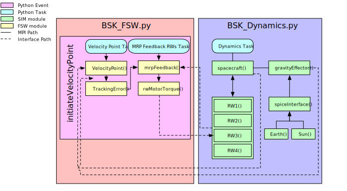

scenario_AttGuidHyperbolic¶
Overview¶
This script sets up a 6-DOF spacecraft on a hyperbolic trajectory. The goal of this tutorial is to demonstrate how to configure a velocity pointing FSW in the new BSK_Sim architecture.
The script is found in the folder basilisk/examples/BskSim/scenarios and executed by using:
python3 scenario_AttGuidHyperbolic.py
The simulation mimics the basic simulation simulation in the earlier tutorial in scenarioAttGuideHyperbolic.
The simulation layout is shown in the following illustration.
Custom Dynamics Configurations Instructions¶
The modules required for this scenario are identical to those used in scenario_AttGuidance.
Custom FSW Configurations Instructions¶
The only new module required to configure the “velocityPoint” FSW mode is velocityPoint itself.
Unlike hill pointing, this module provides a pointing model relative to the velocity vector.
The advantage of the BSK_Sim architecture becomes apparent here. All modules and setup required for the MRP Feedback task were already defined from an earlier scenario. The user simply adds the preconfigured task to the event without having to manually reconfigure the messages. Now there is an additional FSW mode available for all current and future BskSim files.
Illustration of Simulation Results¶
showPlots = True
- scenario_AttGuidHyperbolic.run(showPlots)[source]¶
The scenarios can be run with the followings setups parameters:
- Parameters
showPlots (bool) – Determines if the script should display plots
- class scenario_AttGuidHyperbolic.scenario_VelocityPointing[source]¶
Bases:
BSK_masters.BSKSim,BSK_masters.BSKScenario